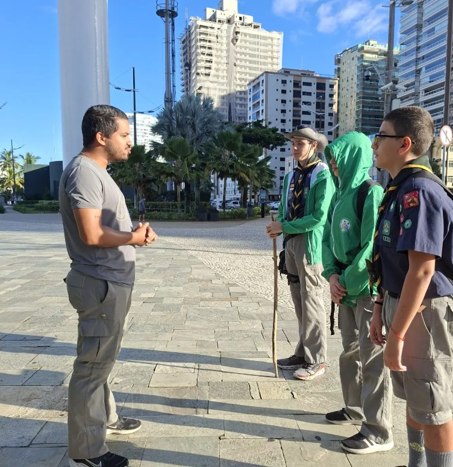
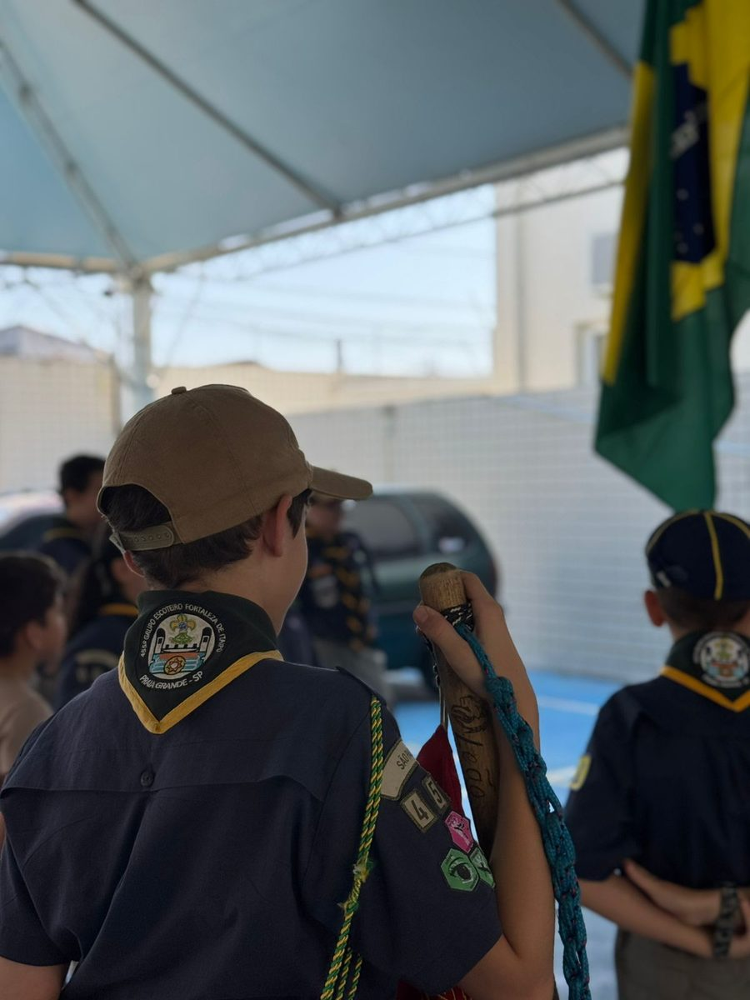
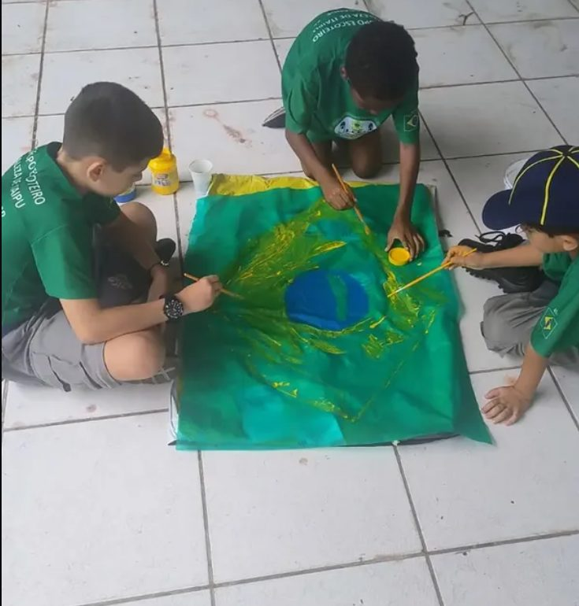

Liderança na prática
Instruções ao ar livre, pela cidade, que desenvolvem iniciativa, orientação e confiança.
Sempre Alerta · Praia Grande/SP
No 455º Grupo Escoteiro Fortaleza de Itaipu, crianças e jovens de 6 a 23 anos aprendem fazendo, ao ar livre e em equipe. E adultos voluntários transformam o próprio tempo em futuro.


Quem somos
O Escotismo é um movimento educacional não formal, baseado no voluntariado e no compromisso com a comunidade. Aqui no 455º Grupo Escoteiro Fortaleza de Itaipu, fundado em 22 de abril de 2018, no Canto do Forte, em Praia Grande/SP, ele ganha vida em atividades em equipe, contato com a natureza e aprendizado pela prática.
O objetivo é formar cidadãos engajados, com liderança, autonomia e consciência socioambiental, sempre guiados pelo nosso lema.
Conheça a nossa históriaNosso lemaSempre Alerta!
Para crescer por inteiro
Saúde, movimento e vida ao ar livre.
Curiosidade, criatividade e resolução de problemas.
Trabalho em equipe, civismo e cidadania.
Amizade, empatia e respeito às diferenças.
Valores, propósito e respeito às crenças de cada um.
Responsabilidade, autonomia e atitude.
O que fazemos
União, aprendizado prático e muita atividade ao ar livre. É assim que o escotismo acontece no nosso dia a dia.

Instruções ao ar livre, pela cidade, que desenvolvem iniciativa, orientação e confiança.

Encontros sobre amizade, civismo e trabalho em equipe.
Atividades lúdicas e manuais para experimentar, errar, tentar de novo e aprender de verdade.
Para cada fase
As atividades acompanham o desenvolvimento de cada jovem, com descobertas e desafios adequados a cada etapa.
6–10 anos
Imaginação, brincadeiras e convivência em equipe, inspiradas nas histórias do Livro da Jângal.
11–14 anos
Vida ao ar livre, acampamentos, trabalho em patrulha e autonomia para novos desafios.
15–17 anos
Superação de desafios, liderança e grandes jornadas que estimulam a iniciativa.
18–23 anos
O último ramo do escotismo: jovens que planejam os próprios projetos, servem à comunidade e constroem o projeto de vida.
Faça parte
Seja para viver a experiência escoteira ou para torná-la possível para outros: queremos conversar com você.
Para crianças e jovens
Quer conhecer o escotismo? Converse com a sua família e venha descobrir como funcionam o nosso grupo, os ramos e as atividades. Tudo começa com um formulário de interesse.
Leva poucos minutos e é feito pelo Google Forms.
Usamos as informações enviadas para falar com você.
Tire suas dúvidas e descubra o ramo ideal.
Para adultos
Você não precisa ter sido escoteiro para demonstrar interesse em ser voluntário. Se você quer ajudar a formar jovens mais autônomos, solidários e preparados, o grupo tem um lugar para você.
Preencha o formulário ou chame o grupo no WhatsApp.
A equipe explica como funciona o voluntariado.
Ajude a construir um mundo melhor, um jovem de cada vez.
O formulário é uma manifestação de interesse e não garante vaga. A participação está sujeita à avaliação e à disponibilidade do grupo.
Dúvidas frequentes
Separamos as respostas mais comuns. Se a sua dúvida não estiver aqui, é só falar com a gente.
Chamar no WhatsAppOs ramos do grupo atendem jovens de 6 a 23 anos: Lobinho (6 a 10), Escoteiro (11 a 14), Sênior (15 a 17) e Pioneiro (18 a 23). Adultos podem participar como voluntários.
Não. Os jovens aprendem na prática, junto com o grupo, e os adultos não precisam ter sido escoteiros para demonstrar interesse em ser voluntários.
O formulário é uma manifestação de interesse. Depois dele, a equipe do grupo entra em contato com as informações enviadas, e a participação depende de avaliação e disponibilidade.
Sim. Para crianças e adolescentes, peça a um responsável para preencher o formulário de interesse.
O grupo fica em Praia Grande/SP. Para saber sobre endereço, horários e visitas, fale com a equipe pelo WhatsApp (13) 97404-7161, pelo e-mail fortalezagefi@gmail.com ou pelo Instagram @ge455fortaleza.
Vamos conversar?
Preencha o formulário de interesse, chame no WhatsApp ou mande um e-mail. A equipe do 455º GE responde para você.
Praia Grande · São Paulo